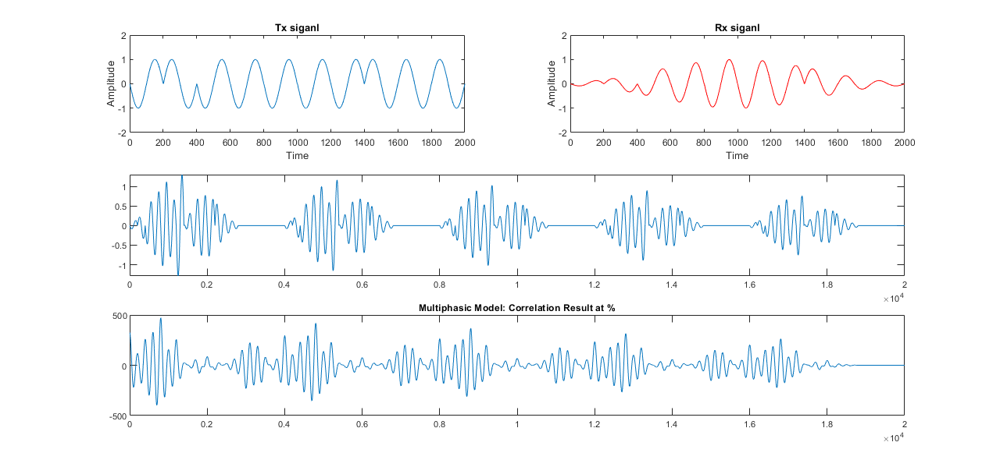

Multipahsic Ultrasonic Model
Contents
Section 1: Signal Spectionification
signal_freq = 1e3; number_of_cycles = 10;
[t, Tx_signal] = create_multiphasic_signal(signal_freq, number_of_cycles);
Rx_signal = create_attenuated_signal(Tx_signal);
Section 2: Rx Window
interference_precentage = 0.4;
voltage_attenuation = [1 0.9 0.8 0.7 0.6 0.5];
Rx_window = [];
for attenuation_precentage = 1:length(voltage_attenuation) - 1
Rx_signal_1 = Rx_signal * voltage_attenuation(attenuation_precentage);
Rx_signal_2 = Rx_signal * voltage_attenuation(attenuation_precentage + 1);
sliding_signals = sliding_signals_percentage(Rx_signal_1, Rx_signal_2,interference_precentage);
Rx_window = [Rx_window sliding_signals];
end
Section 3: Correalation
correlated_signals = xcorr(Rx_window, Tx_signal);
Section 4: Plot signals
figure(1);
subplot(3,2,1); plot(Tx_signal); title('Tx siganl'); xlabel('Time'); ylabel('Amplitude'); ylim([-2 2]);
subplot(3,2,2); plot(Rx_signal, '-r'); title('Rx siganl'); xlabel('Time'); ylabel('Amplitude'); ylim([-2 2]);
subplot(3,2, [3 4]); plot(Rx_window);
subplot(3,2, [5 6]); plot(correlated_signals(20000:end)); title('Multiphasic Model: Correlation Result at %');
